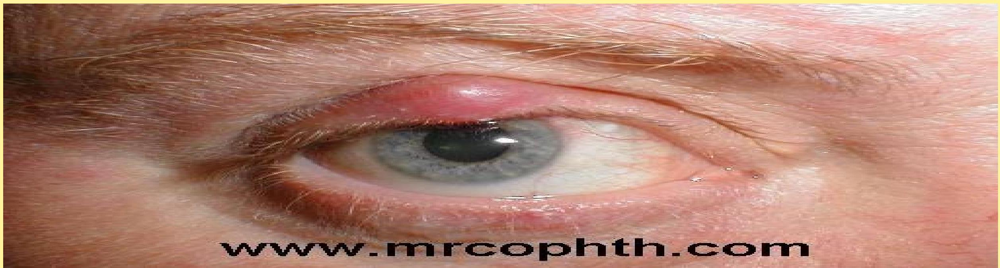
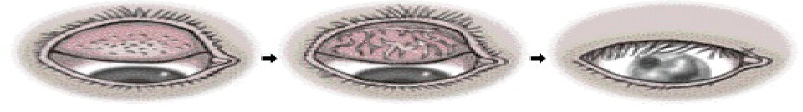

Disorders of the Lids, Conjunctiva, and Cornea
Disorders of the Lid
Anatomy and Function
Eyelids (L):
- Protection:
- Protects eye from foreign matter (dust, dirt, debris)
- Protects against bright light that might damage the eye
- Help spread tears over surface of eye- moist & comfort
Eyelashes (L):
- Filter out foreign matter
- prevent it from getting into eye
Disorders of Position
1. Entropion
Its a medical condition in which the eyelid (usually the lower lid) folds inward. It is very uncomfortable, as the eyelashes constantly rub against the cornea and irritate it. Entropion is usually caused by genetic factors. Lashes abrade the cornea causing:
- Pain.
- Watering.
- Photophobia
- Ulceration and scaring.
UPPER LID ENTROPION: Commonest type in Africa. It is caused by scaring and shortening of the posterior layer of the lid as a result of chronic trachoma. It is common in elderly, middle-aged patients and is rare in children.
LOWER LID ENTROPION: Commonest in developed world which is thought to be due to laxity of the ligaments that hold the lid in correct position. It occurs in elderly patients.
MANAGEMENT: This is by surgery which could be: Tarsoplate rotation or Mucous membrane graft. N/B: Entropion may reoccur and therefore the patient is checked every year.
2. Ectropion
Its sagging and eversion of the lower lid and is usually bilateral. Its caused by relaxation of the orbicularis oculi muscle due to aging or following seventh nerve palsy. The lid margin turned out. It causes a watering eye and secondary infection with recurrent conjunctivitis. It is not cosmetically acceptable. Severe ectropion, particularly of the upper lid, may lead to exposure and blindness.
Types:
- Paralytic (Facial nerve palsy): This is caused by the weakness in the orbicularis muscle. Affects only the lower lid.
- Senile: This is due to the loss of tone in facial muscle, and the ligaments supporting the eyelid. Affects only the lower lid, and occurs only in elderly patients.
- Others: Congenital, Scarring, Allergic
MANAGEMENT: Surgical depending on the cause and severity of the ectropion. Treatment of any exposure is urgent than the treatment of ectropion, therefore tetracycline eye ointment is applied to prevent drying of the eye.
3. Ptosis
Drooping of the upper eyelid causing inability to open the eye fully. It can be bilateral or unilateral. Patients often use forehead muscles and tilt the head in order to see. Children with unilateral ptosis may become amblyopic.
CAUSES:
- Congenital: This is as a result of developmental failure of the levator muscle of the lid.
- Acquired:
- Mechanical factors: this is due to acute or chronic inflammatory edema or swelling, tumor. caused by senility, trauma and lid tumors.
- Myogenic: e.g. muscular dystrophy, myasthenia gravis causes paralysis of the levator muscle.
- Neurogenic (paralytic): affect 3rd cranial nerve. Which supplies the levator muscle.
MANAGEMENT: Surgery- shortening the levator muscle. Treat mysthenia gravis as indicated with neostigmine. Patients can wear spectacles with a special frame which have a posteriorly attached wire clutch.
Infections and Tumors of the Lid
1. Stye (Hordeolum)
A stye or hordeolum is a small, painful lump on the inside or outside of the eyelid. It is actually an abscess filled with pus usually caused by a staphylococcus bacteria eye infection.
- External stye: smaller and more superficial and affects the molls gland starts as a small spot next to an eyelash. It turns into a red, painful swelling that usually lasts several days before it bursts and then heals.
- Internal stye: (on the underside of the lid) it affects the meibomian gland. also causes a red, painful swelling, but its location prevents the familiar whitehead from appearing on the eyelid.
Treatment: Warm compresses. Incision and drainage of the purulent material.
2. Chalazion
A chalazion also known as a meibomian gland lipogranuloma. Its a cyst in the eyelid that is caused by inflammation of a blocked meibomian gland, usually on the upper eyelid. It is a round firm swelling of the lid, not attached to the skin but firmly fixed to the tarsal plate.
Treatment: Topical antibiotic eye drops or ointment. Healing can be facilitated by applying warm compress. If they continue to enlarge or fail to settle within a few months, smaller lesions may be injected with a corticosteroid, or larger ones may be surgically removed using local anesthesia.
Tumors of the Lid
Squamous Cell Carcinoma
Arise in the skin or conjunctiva. It is common in the upper lid. It affects the epithelial cells. Often ulcerated but usually obvious mass. The tumour can metastasise. Risk of developing the tumour is related to exposure to sunlight. It is common to HIV patients.
MANAGEMENT: Invasive tumours may require enucleation. Late presentation there risk of metastasis.
Papilloma
Its any lesion on the eyelid that is of smooth, rounded or pendiculated elevation. Benign warts may arise on the skin or conjunctiva. They are caused by the a virus and therefore virus particles may be shed into the conjunctiva, causing a chronic conjunctivitis.
MANAGEMENT: Remove the wart and cauterize the base.
Lid Lacerations
Injuries and lacerations of the lids are common results of accidents. Injuries that does not involve the lid margin should be treated as other facial wounds, and can be sutured carefully in layers. If the margin is involved, or if there tissue loss, the repair is more complicated. Medial lacrimal, laceration to this part will damage the canaliculi resulting in a watery eye. The repair should be done by an ophthalmologist.
Disorders of the Conjunctiva
Conjunctivitis (Pink Eye)
Conjunctivitis means inflammation of the conjunctiva. It is characterized by a pink appearance (hence the common term pink eye) because of subconjunctival blood vessel hemorrhages. It classified according to its cause: Bacterial, Allergic, Chemical, Viral, Chlamydial.
General symptoms include foreign body sensation, scratching or burning sensation, itching, and photophobia. Conjunctivitis may be unilateral or bilateral, but the infection usually starts in one eye and then spreads to the other eye by hand contact.
Microbial Conjunctivitis
Bacterial conjunctivitis can be acute or chronic. The most common causative microorganisms are Streptococcus pneumoniae, Haemophilus influenzae, and Staphylococcus aureus. The conjunctiva is red, particularly in the lower fornix, where a purulent discharge may be visible. One rare but very serious form is caused by Neisseria Gonorrhoeae, which can destroy the corneas in newborns if not treated immediately.
Allergic Conjunctivitis
The most common form of allergic conjunctivitis is vernal catarrh. This is a chronic allergic condition that lasts 5-7 years before spontaneously resolving. There is extreme itching, epiphora (ie, excessive secretion of tears), injection, and usually severe photophobia. The string like mucoid discharge is usually associated with rubbing the eyes because of severe itching.
Viral Conjunctivitis
Viral conjunctivitis can be acute and chronic. The discharge is watery, and follicles are prominent. The common causative organisms are adenovirus and herpes simplex virus. Conjunctivitis caused by adenovirus is highly contagious. The condition is usually preceded by symptoms of upper respiratory infection. There is no specific treatment, and the condition resolves spontaneously in 1-2 weeks.
Trachoma
Trachoma is a type of conjunctivitis also called chlamydial conjuctivitis which affects mainly the upper tarsal conjunctiva. It is bilateral chronic follicular conjunctivitis of childhood that leads to blindness during adulthood, if left untreated. The infection is caused by Chlamydia Trachomatis. The main reservoir of infection is young children. It is spread by direct contact, flies, and indirect contact (shared cloth etc).
Stages of Trachoma
- TF: Trachoma Follicles. Small ( 0.5-1 mm ), pale lumps in the conjunctiva.
- TI: Trachoma Inflammation. The tarsal conjunctiva becomes red.
- TS: Trachoma Scarring. Repeated attacks cause scarring of the conjunctiva.
- TT: Trachoma Trichiasis. The scarred upper tarsal conjunctiva contracts, causing the upper lid margin to turn in (Entropion) and the lashes to touch the eye.
- CO: Corneal Opacity. Corneal scar obscuring the pupil.
Prevention of Blindness from Trachoma
- Prevention of Trachoma: Improving personal hygiene (e.g. face washing twice daily), and by improving environmental hygiene.
- Treatment of Trachoma: Treatment of TI with Tetracycline.
- Treatment of EntropION: Entropion is curable with surgery.
Corneal Disorders
Corneal Ulcers
Definition: its also called ulcerative keratitis which is an inflammatory or an infective condition of the cornea involving disruption of its epithelial layer with the involvement of the corneal stroma.
SIGNS AND SYMPTOMS:
- All corneal ulcers are very painful.
- Photophobia
- Watering of the eyes.
- Mild or severe eye discharge
- Reduced vision
Causes: Traumatic corneal abrasion/Entropion, Bacterial corneal ulcer, Herpes Simplex, Vitamin A deficiency, Traditional Eye Medicine/Other chemicals, Exposure, Corneal anaesthesia, Burns.
Specific Causes and Treatments
- TRAUMATIC ABRASION: Treatment is topical antibiotic and atropine. If the abrasion is not infected, the eye should be padded for 24 hours for 3/7.
- BACTERIAL CORNEAL ULCER: Commonest causes are Staph Aureus, Pneumococcus, Pseudomonas. Signs include a very red eye, purulent discharge, grey corneal ulcer, and hypopyon. Treatment involves intensive pupil dilation, hourly antibiotics, and sub-conjunctival antibiotics.
- HERPES SIMPLEX INFECTION: Caused by the herpes simplex virus. Ulcers take two forms: Dendritic or Geographical/Amoeboid. Treatment is with antiviral drugs (e.g. acyclovir) and removing infected cells. N/B: If topical steroids are given to a patient with dendritic ulcer, the ulcer will enlarge and perforate.
- TRADITIONAL EYE MEDICINE/CHEMICAL BURNS: Can cause damage by infection, delay in treatment, or chemical injury. The most dangerous chemicals are alkalis. Immediate, copious irrigation is crucial.
- EXPOSURE: Occurs when eyelids do not cover the cornea (e.g., Facial Nerve Palsy, Proptosis). Management includes antibiotic ointment and treating the underlying cause (e.g., tarsorrhaphy).
Dry Eye Syndrome & Vitamin A Deficiency
Vitamin A Deficiency
A common cause of corneal scarring and blindness in developing countries. Vitamin A deficiency not only causes blindness, but also kills many thousands of young children every year.
CAUSES OF VIT A DEFICIENCY: MALNUTRITION, MEASLES, MALABSORPTION.
CLINICAL FEATURES: Night Blindness, Bitot's Spot, Conjunctival and Corneal Xerosis (Dryness), Corneal Ulcer, Corneal Necrosis (Keratomalacia).
TREATMENT AND PREVENTION: Treat with Vit A 200,000 i.u orally on days 1, 3 and 7. Prevention of measles and other severe childhood illnesses by immunization will reduce the number of children suffering from Vit A deficiency. Mothers should be encouraged to introduce Vit A rich foods like green leafy vegetables, paw paw, mangoes, eggs, liver, and red palm oil.
Corneal Dystrophies and Surgeries
Corneal Dystrophies
Corneal dystrophies are inherited conditions characterized by deposits in the corneal layers, leading to decreased vision. Keratoconus is a condition characterized by a conical protuberance of the cornea with progressive thinning and irregular astigmatism. Blurred vision is a prominent symptom. Rigid, gas-permeable contact lenses correct irregular astigmatism and improve vision. Penetrating keratoplasty is indicated when contact lens correction is no longer effective.
Corneal Surgeries
Phototherapeutic Keratectomy (PTK)
PTK is a laser procedure that is used to treat diseased corneal tissue by removing or reducing corneal opacities and smoothing the anterior corneal surface to improve functional vision.
Keratoplasty
Keratoplasty (ie, corneal transplantation or corneal grafting) involves replacing abnormal host tissue with a healthy donor corneal tissue. Indications include Keratoconus, Corneal dystrophy, and Corneal scarring. The patient must be taught to identify signs and symptoms of graft failure, such as blurred vision, discomfort, tearing, or redness.
Radial Keratotomy (RK)
Radial keratotomy (RK) is indicated for low myopia. The procedure involves making four to eight, deep, radial incisions in the cornea. Common side effects include glare, photosensitivity, and fluctuations of vision.
Laser Vision Correction
- Photorefractive Keratectomy (PRK): A procedure used to treat myopia and hyperopia with or without astigmatism. The excimer laser is applied directly to the cornea.
- Laser-Assisted In Situ Keratomileusis (LASIK): Involves flattening the anterior curvature of the cornea by removing a stromal lamella or layer. The surgeon creates a corneal flap, uses the excimer laser on the stromal bed, and then repositions the flap.